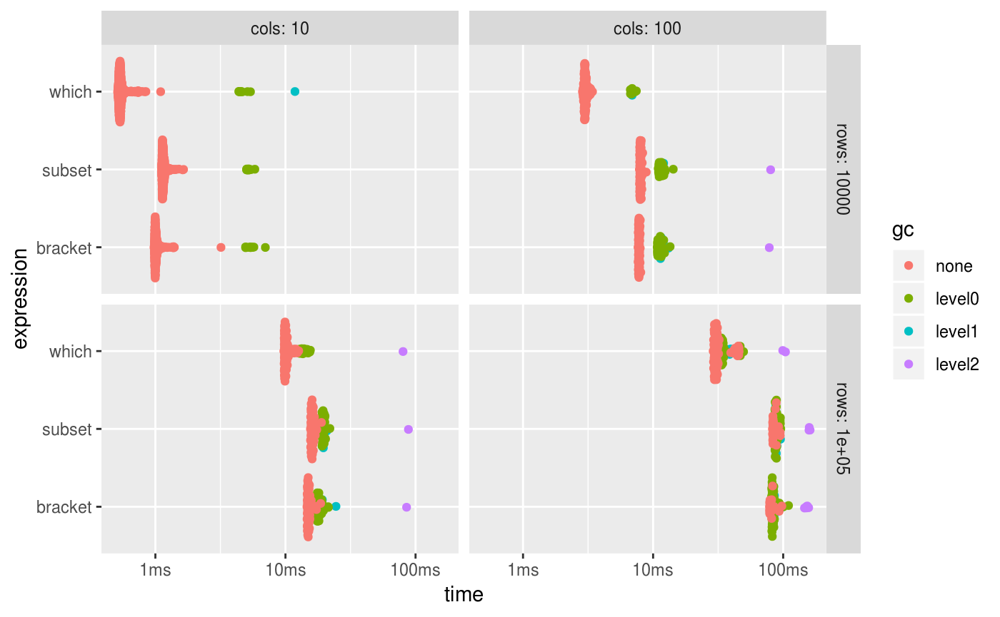
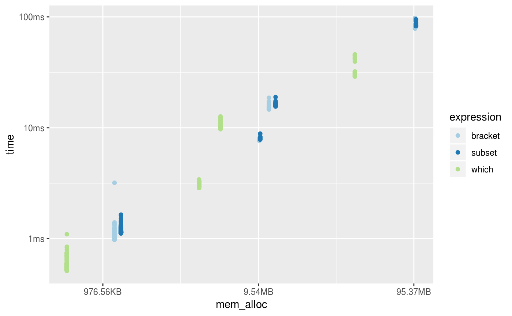

bench is now available on CRAN!
The goal of bench is to benchmark code, tracking execution time, memory allocations and garbage collections.
Install the latest version with:
Compared to other methods such as [system.time], rbenchmark, tictoc or microbenchmark we feel it has a number of benefits.
bench::press(), a function which allows you to easily perform and combine benchmarks across a large grid of values.bench::mark()
Benchmarks can be run with bench::mark(), which takes one or more expressions to benchmark against each other.
bench::mark() will throw an error if the results are not equivalent, so you don’t accidentally benchmark inequivalent code.
## Error: Each result must equal the first result:
## `[` does not equal `[`Each result must equal the first result:
## `dat` does not equal `dat`Each result must equal the first result:
## `dat$x > 500` does not equal `which(dat$x > 499)`Each result must equal the first result:
## `` does not equal ``Results are easy to interpret, with human readable units.
## # A tibble: 3 x 6
## expression min median `itr/sec` mem_alloc `gc/sec`
## <bch:expr> <bch:tm> <bch:tm> <dbl> <bch:byt> <dbl>
## 1 dat[dat$x > 500, ] 431µs 457µs 2061. 377KB 12.7
## 2 dat[which(dat$x > 500), ] 340µs 359µs 2733. 260KB 12.7
## 3 subset(dat, x > 500) 554µs 577µs 1702. 509KB 15.0By default the summary uses absolute measures, however relative results can be obtained by using relative = TRUE in your call to bench::mark() or calling summary(relative = TRUE) on the results.
## # A tibble: 3 x 6
## expression min median `itr/sec` mem_alloc `gc/sec`
## <bch:expr> <dbl> <dbl> <dbl> <dbl> <dbl>
## 1 dat[dat$x > 500, ] 1.27 1.28 1.21 1.45 1
## 2 dat[which(dat$x > 500), ] 1 1 1.61 1 1.00
## 3 subset(dat, x > 500) 1.63 1.61 1 1.96 1.19bench::press()
bench::press() is used to run benchmarks against a grid of parameters. Provide setup and benchmarking code as a single unnamed argument then define sets of values as named arguments. The full combination of values will be expanded and the benchmarks are then pressed together in the result. This allows you to benchmark a set of expressions across a wide variety of input sizes, perform replications and other useful tasks.
set.seed(42)
create_df <- function(rows, cols) {
as.data.frame(setNames(
replicate(cols, runif(rows, 1, 1000), simplify = FALSE),
rep_len(c("x", letters), cols)))
}
results <- bench::press(
rows = c(10000, 100000),
cols = c(10, 100),
{
dat <- create_df(rows, cols)
bench::mark(
min_iterations = 100,
bracket = dat[dat$x > 500, ],
which = dat[which(dat$x > 500), ],
subset = subset(dat, x > 500)
)
}
)## Running with:
## rows cols## 1 10000 10## 2 100000 10## 3 10000 100## 4 100000 100## # A tibble: 12 x 8
## expression rows cols min median `itr/sec` mem_alloc `gc/sec`
## <bch:expr> <dbl> <dbl> <bch:tm> <bch:tm> <dbl> <bch:byt> <dbl>
## 1 bracket 10000 10 975.58µs 1.01ms 973. 1.13MB 22.4
## 2 which 10000 10 513.39µs 536.25µs 1831. 572.7KB 20.0
## 3 subset 10000 10 1.12ms 1.15ms 859. 1.25MB 22.3
## 4 bracket 100000 10 14.63ms 14.93ms 66.0 11.16MB 45.9
## 5 which 100000 10 9.71ms 9.98ms 97.6 5.44MB 22.9
## 6 subset 100000 10 15.56ms 16.01ms 62.0 12.3MB 43.1
## 7 bracket 10000 100 7.65ms 7.79ms 128. 9.68MB 72.1
## 8 which 10000 100 2.86ms 3.01ms 329. 3.96MB 44.4
## 9 subset 10000 100 7.84ms 7.97ms 125. 9.8MB 48.5
## 10 bracket 100000 100 78.45ms 79.31ms 12.2 97.09MB 66.3
## 11 which 100000 100 28.95ms 30.74ms 30.6 39.84MB 15.1
## 12 subset 100000 100 82.66ms 83.64ms 11.7 98.24MB 43.9ggplot2::autoplot() can be used to generate an informative default plot. This plot is colored by GC level (0, 1, or 2) and faceted by parameters (if any). By default it generates a beeswarm plot, however you can also specify other plot types (jitter, ridge, boxplot, violin). See ?autoplot.bench_mark for full details.

You can also produce fully custom plots by un-nesting the results and working with the data directly.
library(tidyverse)
results %>%
unnest() %>%
mutate(expression = as.character(expression)) %>%
filter(gc == "none") %>%
ggplot(aes(x = mem_alloc, y = time, color = expression)) +
geom_point() +
scale_color_brewer(type = "qual", palette = 3)
When the development version of bench was introduced a few users expressed concern over the number of dependencies in the package. I will attempt to explain why these dependencies exist and why the true load may actually be less than you might think.
While bench currently has 19 dependencies, only 8 of these are hard dependencies; that is they are needed to install the package. Of these 8 hard dependencies 3 of them (methods, stats, utils) are base packages installed with R. Of these 5 remaining packages 3 have no additional dependencies (glue, profmem, rlang). The two remaining packages (tibble and pillar) are used to provide nice printing of the times and memory sizes and support for list columns to store the timings, garbage collections, and allocations. These are major features of the bench package and would not work without these dependencies.
The remaining 11 packages are soft dependencies, used either for testing or for optional functionality, most notably plotting.
We hope bench is a useful tool for benchmarking short expressions of code. Please open GitHub issues for any feature requests or bugs.
Learn more about bench at - http://bench.r-lib.org